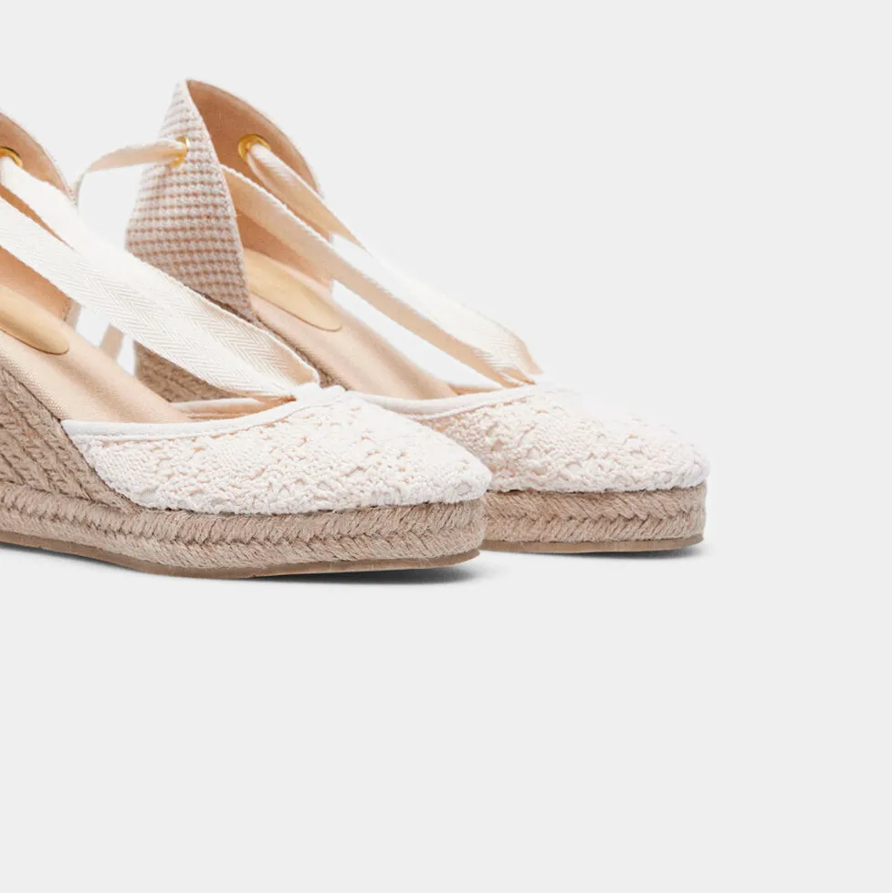

Tu armario de primavera cool te pide ya estas alpargatas de cuña de crochet de 35 € de Cortefiel
Son baratísimas y tienen un 'crochet' ideal en la punta, por eso creemos que estas alpargatas de cuña blancas de Cortefiel serán el objeto preferido de las 'insiders'
Ahora que va faltando menos para el buen tiempo, ya no solo estamos empezando a mirar ropa fresquita en las tiendas, sino que también estamos fichando alpargatas y sandalias. A la temporada de lluvias no debe quedarle mucho y por eso, después de habernos enamorado de unas menorquinas clásicas, ahora le hemos echado el ojo a estas alpargatas de cuña que acabamos de ver en la tienda 'online' de Cortefiel.
Aprovechando que la tarde ha sido un poco fría, incluso lluviosa en muchas zonas, hemos hecho una sesión de compras virtuales en nuestras firmas 'low cost' preferidas. Muentras le echábamos un vistazo a las novedades en tienda de Cortefiel, que últimamente no deja de enamorarnos con piezas únicas y de pura tendencia, hemos caído rendidas ante unas alpargatas de cuña que combinan la delicadeza con el 'vibe' veraniego y bohemio que tanto nos gusta. La clave está en que, a pesar de ser un diseño de alpargatas bastante clásico, tiene la punta forrada con un 'crochet' precioso en color blanco. Nos parecen claves para poder apostar por estilismos sofisticados pero muy naturales a la vez.
De momento, nosotras todavía no hemos tomado la decisión de comprarlas o no porque tenemos muchas cosas fichadas en lo nuevo en tienda de las marcas más baratas de moda. Pero lo cierto es que estas alpargatas de cuña alta con crochet blanco en la punta de Cortefiel tienen todas las papeletas para unirse a nuestro vestidor. Tienen un precio irresistible y ya nos hemos imaginado más de un look, tanto con vestidos como con pantalones, con los que tenemos clarísimo que vamos a arrasar esta primavera verano. Incluso nos parecen ideales para ir como invitada a alguna boda que tenemos.